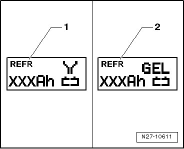
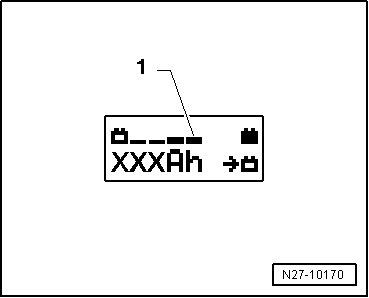
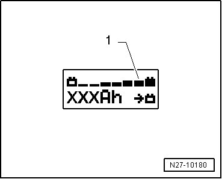
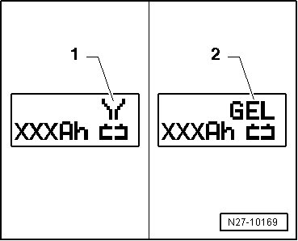

Battery Charger VAS 5903
Battery Charger VAS 5903
--> [ Battery, Charging ]
--> [ Refresh Charging with Battery Charger ]
--> [ Charging Severely Discharged Battery ]
Battery, Charging
CAUTION!
Risk of injury. Observe warning notes and safety precautions. Refer to--> [ Battery Safety Precautions ] Battery Safety Precautions!
CAUTION!
Batteries that have a colorless or light yellow visual indicator must not be tested or charged. Jump starting must not be used!
There is a risk of explosion during testing, charging or jump starting.
These batteries must be replaced.
Special tools, testers and auxiliary items required
• Battery Charger VAS 5903 (VAS 5903)
• The effective charging current can be read out directly on this charging device.
• Observe the charging instructions. Refer to--> [ Battery Charger 5900 ] Battery Charger 5900.
• The battery temperature must be at least 10 °C.
- Turn off the ignition and all electrical consumers.
- Plug in the electrical system connector of the charger. The last selected operation mode is shown on the display. Refer to --> [ Battery Charger 5900 ] Battery Charger 5900.
- Using INFO, set the mode of operation that corresponds with the battery.

The symbol - 1 - for "standard charge of wet batteries" or the symbol - 2 - for "standard charge of Gel/Absorbent Glass Mat (AGM) batteries" is indicated in the display.
- Set the capacity (Ah) of the battery to be charged with the corresponding button "Up" [Up Arrow] or "Down" [Down Arrow].
- Clamp the red charging clamp "+" to the positive battery terminal.
- Clamp the black charging clamp "-" to the negative battery terminal.
The charger recognizes the nominal voltage of the connected battery (6 V, 12V, or 24 V) and begins the charging process automatically.
At a charge condition of approximately 80 - 85 %, charging unit begins the "Final-charging". The fourth bar is indicated on the display - 1 -. The battery is ready for operation.

With a charge status of 100 %, all bars are indicated on the display.

• With the battery type "standard charge", parallel operation of consumers during the charging process is possible. The charging time is lengthened by this.
• Depending on battery type, the charger switches over to sustain charging after approximately 1-7 hours. To achieve a 100 % charge status, the battery should remain connected to the charger for that long.
Possible malfunctions and how they are handled:
1 - Displayed voltage does not match the nominal voltage:
- Hold the appropriate button "Up" [Up Arrow] or " Down" [Down Arrow] until the charging process begins.
2 - Displayed battery voltage does not match rated voltage - charging process has already begun:
- Press START / STOP twice.
- Hold the appropriate button "Up" [Up Arrow] or " Down" [Down Arrow] until the charging process begins again.
3 - The charger does not recognize a battery, when the battery voltage is less than 2 V:
The display remains unchanged.
The selected battery type and Ampere hours (Ah) are displayed.
End battery charging process:
- Press START / STOP.
- Remove the black charging clamp "-" of the charger from the negative battery terminal.
- Remove the red charging clamp "+" of the charger from the positive battery terminal.
- Pull out the electrical system connector of the charger.
Refresh Charging with Battery Charger
CAUTION!
Risk of injury. Observe warning notes and safety precautions. Refer to --> [ Battery Safety Precautions ] Battery Safety Precautions!
CAUTION!
Batteries that have a colorless or light yellow visual indicator must not be tested or charged. Jump starting must not be used!
There is a risk of explosion during testing, charging or jump starting.
These batteries must be replaced.
CAUTION!
"Refresh charging" is not permitted for VW vehicles, because voltage surges can damage the on-board electronics.
If "Refresh charging" is still used, the battery must always be separated from the vehicle electrical system.
CAUTION!
During the charging process, always set the operation mode corresponding with the battery. Refer to --> [ Battery Charger 5095A ] Battery Charger 5095A!
"Refresh charging" is suitable for:
• Wet batteries, that can be topped up with distilled water.
Do not use "Refresh charging" on maintenance-free wet batteries.
"Refresh charging (Refr)" is only used on batteries that are possibly defective (e.g. sulfation). Thereby the battery is charged to the maximum specific gravity of electrolyte and the plates are reactivated (removal of sulfation layer).
Special tools, testers and auxiliary items required
• Battery Charger VAS 5903 (VAS 5900)
• The battery temperature must be at least 10 °C.
- Turn off the ignition and all electrical consumers.
- Plug in the electrical system connector of the charger. The last selected operation mode is shown on the display. Refer to --> [ Battery Charger 5900 ] Battery Charger 5900.
- Using INFO, set the mode of operation that corresponds with the battery.
The symbol - 1 - for "Refresh charging of wet batteries" or the symbol - 2 - for "Refresh charging of Gel/AGM batteries" is indicated in the display.
- Set the capacity (Ah) of the battery to be charged with the corresponding button "Up" [Up Arrow] or "Down" [Down Arrow].
- Clamp the red charging clamp "+" to the positive battery terminal.
- Clamp the black charging clamp "-" to the negative battery terminal.
The charger recognizes the nominal voltage of the connected battery (6 V, 12V, or 24 V) and begins the charging process automatically.
At a charge condition of approximately 80 - 85 % battery voltage, charging unit begins the "Final-charging". The fourth bar is indicated on the display - 1 -. The battery is ready for operation.
• The "Refresh charging" process is dependent on the degree of sulfation of the battery.
Possible malfunctions and how they are handled:
1 - Displayed voltage does not match the nominal voltage:
- Hold the appropriate button "Up" [Up Arrow] or " Down" [Down Arrow] until the charging process begins.
2 - Displayed battery voltage does not match rated voltage - charging process has already begun:
- Press START / STOP twice.
- Hold the appropriate button "Up" [Up Arrow] or " Down" [Down Arrow] until the charging process begins.
3 - The charger does not recognize a battery, when the battery voltage is less than 2 V:
The display remains unchanged.
The selected operation mode and Ampere hours (Ah) are displayed.
End battery charging process:
- Press START / STOP.
- Remove the black charging clamp "-" of the charger from the negative battery terminal.
- Remove the red charging clamp "+" of the charger from the positive battery terminal.
- Pull out the electrical system connector of the charger.
Charging Severely Discharged Battery
CAUTION!
Risk of injury. Observe warning notes and safety precautions. Refer to --> [ Battery Safety Precautions ] Battery Safety Precautions!
CAUTION!
Batteries that have a colorless or light yellow visual indicator must not be tested or charged. Jump starting must not be used!
There is a risk of explosion during testing, charging or jump starting.
These batteries must be replaced.
CAUTION!
• The polarity protection of the charger clamps is not active in the operation mode "charging severely batteries/Support mode". Connect the charger clamps to the battery terminals correctly according to polarity!
• During the charging process, always set the operation mode corresponding with the battery Operation instructions for Battery Charger VAS 5900!
• The severely discharged battery is not recognized by the charger. Refer to --> [ Severely Discharged Batteries ] Severely Discharged Batteries.
• Do not touch START / STOP if the charge clamps are connected incorrectly! The charger can be damaged.
It is not possible for the Battery Charger (VAS 5900) to automatically recognize batteries with voltage under 2 Volts.
Special tools, testers and auxiliary items required
• Battery Charger VAS 5903 (VAS 5900)
• The battery temperature must be at least 10 °C.
- Turn off the ignition and all electrical consumers.
- Plug in the electrical system connector of the charger. The last selected operation mode is shown on the display. Refer to --> [ Battery Charger 5900 ] Battery Charger 5900.
- Using INFO, set the type that corresponds with the battery.

The symbol - 1 - for "service charging of wet batteries" or the symbol - 2 - for "service charging of Gel/Absorbent Glass Mat (AGM) batteries" is indicated in the display.
- Set the capacity (Ah) of the battery to be charged with the corresponding button "Up" [Up Arrow] or "Down" [Down Arrow].
- Clamp the red charging clamp "+" to the positive battery terminal.
- Clamp the black charging clamp "-" to the negative battery terminal.
- Press the START / STOP for approximately 5 seconds. The menu selection "Charging severely discharged batteries/Support mode " is activated.
- Press corresponding button "Up" [Up Arrow] or " Down" [Down Arrow], to set respective battery voltage (6 V, 12 V or 24 V).
• If no button is touched within 5 seconds, the charger will return to the main menu (operation mode selection).
- Confirm the selected battery voltage by pressing START / STOP.
Then the inquiry about the correct polarity of the charger clamps is made.
- Verify that the charger clamps are connected to the correct polarity.
- Confirm that the charger clamps are connected to the correct polarity by pressing START / STOP.
The charger begins charging the severely discharged battery.
End battery charging process:
- Press START / STOP.
- Remove the black charging clamp "-" of the charger from the negative battery terminal.
- Remove the red charging clamp "+" of the charger from the positive battery terminal.
- Pull out the electrical system connector of the charger.